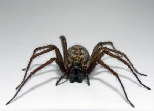
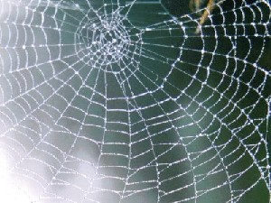
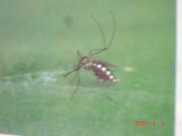

कीट-पतंग एवं अरीढ़ जीव
ɑbikkirɑːsenneː आबीक्कीराऽसेन्नेऽ MORPH: ɑ-bikkirɑːsenneː. N सं. a kind of scorpion; एक प्रकार का बिच्छू. SD: insect & invertebrate, कीट-पतंग एवं अरीढ़ जीव.Environmental
ɑjuro2 आजूरो N सं. spider; मकड़ी. SD: insect & invertebrate, कीट-पतंग एवं अरीढ़ जीव. SEE: ɑjuro1 ‘goddess’ ‘देवी आजूरोhm:{1}’.Environmental
bɑto बातो N सं. a type of round tick; एक प्रकार का गोल पिस्सू. SD: insect & invertebrate, कीट-पतंग एवं अरीढ़ जीव.Environmental
bemo बेमो VAR: beːmo बेऽमो; bemu बेमू. N सं. largest butterfly on the islands; द्वीप की सबसे बड़ी तितली. SD: insect & invertebrate, कीट-पतंग एवं अरीढ़ जीव.Environmental
|
bemututʈoʈol बेमूतूत्टोटोल MORPH: bemu-tut-ʈoʈol. N सं. dotted butterfly; धब्बेदार तितली. SD: insect & invertebrate, कीट-पतंग एवं अरीढ़ जीव.Environmental
 |
 bilikʰu2 बीलीखू N सं. spider; मकड़ी. SD: insect & invertebrate, कीट-पतंग एवं अरीढ़ जीव. SEE: bilikʰu1 ‘god (of the Jeru); north-east storm’ ‘देवता (जेरो का); उत्तर-पूर्वी तूफ़ान बीलीखूhm:{1}’; bilikʰu3 ‘time period, of the months of January and February’ ‘जनवरी व फरवरी माह का समय बीलीखूhm:{3}’.Environmental
bilikʰu2 बीलीखू N सं. spider; मकड़ी. SD: insect & invertebrate, कीट-पतंग एवं अरीढ़ जीव. SEE: bilikʰu1 ‘god (of the Jeru); north-east storm’ ‘देवता (जेरो का); उत्तर-पूर्वी तूफ़ान बीलीखूhm:{1}’; bilikʰu3 ‘time period, of the months of January and February’ ‘जनवरी व फरवरी माह का समय बीलीखूhm:{3}’.Environmental
 |
bilikʰututŋeo बीलीखूतूतङेओ MORPH: bilikʰu-tut-ŋeo. VAR: bilikʰut-ɲo बीलीखूतञो. N सं. cobweb; मकड़जाल. SD: insect & invertebrate, कीट-पतंग एवं अरीढ़ जीव.Environmental
bolŋo बोलङो VAR: bolmɔ बोलमौ. N सं. a kind of big leech; एक प्रकार की बड़ी जोंक. SD: insect & invertebrate, कीट-पतंग एवं अरीढ़ जीव.Environmental
 bullu2 बूल्लू VAR: bulu बूलू; buːlu बूऽलू. N सं. a white round worm of the outer sea; बाहरी समुद्र पर पाया जाने वाला सफ़ेद गोल कीड़ा. SD: insect & invertebrate, कीट-पतंग एवं अरीढ़ जीव, marine, समुद्री. SEE: bullu1 ‘fish’ ‘मछली बूल्लूhm:{1}’.Environmental
bullu2 बूल्लू VAR: bulu बूलू; buːlu बूऽलू. N सं. a white round worm of the outer sea; बाहरी समुद्र पर पाया जाने वाला सफ़ेद गोल कीड़ा. SD: insect & invertebrate, कीट-पतंग एवं अरीढ़ जीव, marine, समुद्री. SEE: bullu1 ‘fish’ ‘मछली बूल्लूhm:{1}’.Environmental
 |
cɑlo1 चालो VAR: cɑlɔ चालौ. N सं. short-tailed cricket; छोटी पूंछ वाला झींगुर. Bachytrupes potentosus. SD: insect & invertebrate, कीट-पतंग एवं अरीढ़ जीव. SEE: cɑlo2 ‘many’ ‘ज़्यादा; ढेर सारा चालोhm:{2}’; cɑlo3 ‘shell’ ‘सीपी चालोhm:{3}’.Environmental
cenɑrcom चेनारचोम MORPH: cenɑr-com. N सं. a big black ant; एक प्रकार की काले बड़े आकार की चींटी. SD: insect & invertebrate, कीट-पतंग एवं अरीढ़ जीव.Environmental
cɛrle चैरले VAR: cɛrle चैरले. N सं. a small blood-sucking green fly; एक छोटी ख़ून चूसने वाली हरी मक्खी. SD: insect & invertebrate, कीट-पतंग एवं अरीढ़ जीव.Environmental
 cɔkle चौकले VAR: cɔkʰle चौखले. N सं. insect eaten by woodpecker; कीड़ा जिसको कठफोड़वा खाता है. SD: insect & invertebrate, कीट-पतंग एवं अरीढ़ जीव.Environmental
cɔkle चौकले VAR: cɔkʰle चौखले. N सं. insect eaten by woodpecker; कीड़ा जिसको कठफोड़वा खाता है. SD: insect & invertebrate, कीट-पतंग एवं अरीढ़ जीव.Environmental
 |
 cɔlekʰecɔm चौलेखेचौम VAR: cɔlikɑcɔm चौलीकाचौम. N सं. centipede, red; लाल कनखजूरा/ईल्ली. SD: insect & invertebrate, कीट-पतंग एवं अरीढ़ जीव.Environmental
cɔlekʰecɔm चौलेखेचौम VAR: cɔlikɑcɔm चौलीकाचौम. N सं. centipede, red; लाल कनखजूरा/ईल्ली. SD: insect & invertebrate, कीट-पतंग एवं अरीढ़ जीव.Environmental
 |
dikirɑseni दीकीरासेनी VAR: ɖikʰirɑseni डीखीरासेनी. N सं. scorpion; बिच्छू. SD: insect & invertebrate, कीट-पतंग एवं अरीढ़ जीव.Environmental
 |
ɖowlu डोवलू VAR: ɖoulu डोऊलू; ɖowlo डोवलो. N सं. a big red ant which is found on tree trunks; बड़ी लाल चींटी जो पेड़ के तने पर पाई जाती है. Oecophylla smaragdina. ɖowlu ʈʰu bi oko डोवलू ठू बी ओको. An ant bit me. चींटी ने मुझे काटा।. SD: insect & invertebrate, कीट-पतंग एवं अरीढ़ जीव.Environmental
ɖum1 डूम N सं. centipede; कनखजूरा; ईल्ली. SD: insect & invertebrate, कीट-पतंग एवं अरीढ़ जीव. SEE: ɖum2 ‘earthworm’ ‘केंचुआ डूमhm:{2}’; ɖum3 ‘fly, newborn’ ‘मक्खी, शिशु डूमhm:{3}’.Environmental
ɖum2 डूम N सं. earthworm; केंचुआ. SD: insect & invertebrate, कीट-पतंग एवं अरीढ़ जीव. SEE: ɖum1 ‘centipede’ ‘कनखजूरा; ईल्ली डूमhm:{1}’; ɖum3 ‘fly, newborn’ ‘मक्खी, शिशु डूमhm:{3}’.Environmental
 ɖum3 डूम N सं. newborn fly just hatched from eggs; शिशु मक्खी जो अण्डे के फूटने पर निकलती है. kʰider kotrɑkɔ ɖum de खीदेर कोत्राकौ डूम दे. The coconut is infected with flies. नारियल के अंदर मक्खियां (कीड़े) हैं।. SD: insect & invertebrate, कीट-पतंग एवं अरीढ़ जीव. SEE: ɖum1 ‘centipede’ ‘कनखजूरा; ईल्ली डूमhm:{1}’; ɖum2 ‘earthworm’ ‘केंचुआ डूमhm:{2}’.Environmental
ɖum3 डूम N सं. newborn fly just hatched from eggs; शिशु मक्खी जो अण्डे के फूटने पर निकलती है. kʰider kotrɑkɔ ɖum de खीदेर कोत्राकौ डूम दे. The coconut is infected with flies. नारियल के अंदर मक्खियां (कीड़े) हैं।. SD: insect & invertebrate, कीट-पतंग एवं अरीढ़ जीव. SEE: ɖum1 ‘centipede’ ‘कनखजूरा; ईल्ली डूमhm:{1}’; ɖum2 ‘earthworm’ ‘केंचुआ डूमhm:{2}’.Environmental
ɛrɑce ऐराचे MORPH: ɛ-rɑce. N सं. sting; डंक. SD: insect & invertebrate, कीट-पतंग एवं अरीढ़ जीव.Environmental
 |
 ijibu ईजीबू VAR: ijubu ईजूबू. N सं. housefly; मक्खी. SD: insect & invertebrate, कीट-पतंग एवं अरीढ़ जीव.Environmental
ijibu ईजीबू VAR: ijubu ईजूबू. N सं. housefly; मक्खी. SD: insect & invertebrate, कीट-पतंग एवं अरीढ़ जीव.Environmental
ijiɸu ईजीफू N सं. bee; मधुमक्खी. SD: insect & invertebrate, कीट-पतंग एवं अरीढ़ जीव.Environmental
 iŋkenɑp ईङ्केनाप MORPH: iŋ-kenɑp. N सं. spider legs; मकड़ी के पैर. SD: body part term, शारीरिक अंग शब्दावली, insect & invertebrate, कीट-पतंग एवं अरीढ़ जीव.Environmental
iŋkenɑp ईङ्केनाप MORPH: iŋ-kenɑp. N सं. spider legs; मकड़ी के पैर. SD: body part term, शारीरिक अंग शब्दावली, insect & invertebrate, कीट-पतंग एवं अरीढ़ जीव.Environmental
 jelmo जेलमो VAR: jermo जेरमो. N सं. earthworms eaten by hen; केंचुआ जिनको मुर्गी खाती है. SD: insect & invertebrate, कीट-पतंग एवं अरीढ़ जीव.Environmental
jelmo जेलमो VAR: jermo जेरमो. N सं. earthworms eaten by hen; केंचुआ जिनको मुर्गी खाती है. SD: insect & invertebrate, कीट-पतंग एवं अरीढ़ जीव.Environmental
jireʈo जीरेटो N सं. a variety of a wasp; एक प्रकार का बर्र या ततैया. SD: insect & invertebrate, कीट-पतंग एवं अरीढ़ जीव.Environmental
 |
jiroʈo जीरोटो MORPH: jiro-ʈo. N सं. a small bee with a hard sting that causes very painful swelling; छोटी मक्खी जो बहुत ज़ोर से काटती है जिससे अत्यंत पीड़ादायक सूजन हो जाती है. SD: insect & invertebrate, कीट-पतंग एवं अरीढ़ जीव.Environmental
jubu2 जूबू VAR: juvu जूवू. N सं. a kind of fly; एक तरह की मक्खी. SD: insect & invertebrate, कीट-पतंग एवं अरीढ़ जीव. SEE: jubu1 ‘cluster’ ‘समूह जूबूhm:{1}’.Environmental
 |
kɑlɑbo1 कालाबो VAR: kɑlɑːbo कालाऽबो. N सं. root-eating beetle; जड़ खाने वाला भंवरा. Coleoptera. kɑlɑbo-tɔl-cɛrel कालाबो तौल चैरेल. green beetle. हरा भृंग. SD: insect & invertebrate, कीट-पतंग एवं अरीढ़ जीव. SEE: kɑlɑbo2 ‘cockroach’ ‘तिलचट्टा कालाबोhm:{2}’.Environmental
kɑlɑbo2 कालाबो VAR: kɑlɑːbo कालाऽबो. N सं. cockroach; तिलचट्टा. SD: insect & invertebrate, कीट-पतंग एवं अरीढ़ जीव. SEE: kɑlɑbo1 ‘beetle’ ‘भंवरा कालाबोhm:{1}’.Environmental
 |
kɑrɑi काराई VAR: kɑɽɑi काड़ाई; kɑrɑːy काराऽय. N सं. black ant; काली चींटी. Paratrechina lazicomis. SD: insect & invertebrate, कीट-पतंग एवं अरीढ़ जीव.Environmental
kɑrɑːwlu काराऽवलू N सं. a kind of long snail; एक प्रकार का लम्बा घोंघा. SD: insect & invertebrate, कीट-पतंग एवं अरीढ़ जीव.Environmental
kɑtɑɲ काटाञ N सं. firefly; जुगनू. SD: insect & invertebrate, कीट-पतंग एवं अरीढ़ जीव.Environmental
keipkɑrɑkɛrep केईपकाराकैरेप MORPH: keip-kɑrɑ kɛrep. N सं. leaf beetle; पत्तों वाला भंवरा. SD: insect & invertebrate, कीट-पतंग एवं अरीढ़ जीव.Environmental
kelɑ केला VAR: teːlɑ तेऽला. N सं. a long black tick; एक लम्बा काला कीड़ा जो पशुओं के बदन पर होता है. SD: insect & invertebrate, कीट-पतंग एवं अरीढ़ जीव.Environmental
kɛʈo कैटो N सं. a kind of sea cricket, 11 cm long; एक प्रकार का समुद्री झींगुर, 11 से.मी. लम्बा. SD: insect & invertebrate, कीट-पतंग एवं अरीढ़ जीव.Environmental
 korobito कोरोबीतो VAR: kɔrɔbito कौरौबीतो; korobitʰo कोरोबीथो; kɔrɔbitʰo कौरौबीथो. N सं. centipede; कनखजूरा; ईल्ली. SD: insect & invertebrate, कीट-पतंग एवं अरीढ़ जीव.Environmental
korobito कोरोबीतो VAR: kɔrɔbito कौरौबीतो; korobitʰo कोरोबीथो; kɔrɔbitʰo कौरौबीथो. N सं. centipede; कनखजूरा; ईल्ली. SD: insect & invertebrate, कीट-पतंग एवं अरीढ़ जीव.Environmental
korobitotɑmimi कोरोबीतोतामीमी MORPH: korobito-tɑ-mimi. N सं. a kind of scorpion, lit. mother of centipede; एक प्रकार का बिच्छू, शाब्दिक अर्थः कनखजूरे की मां. SD: insect & invertebrate, कीट-पतंग एवं अरीढ़ जीव.Environmental
koːtmɑrɑːy कोऽतमाराऽय N सं. white ant; सफ़ेद चींटी. SD: insect & invertebrate, कीट-पतंग एवं अरीढ़ जीव.Environmental
 koʈmɑrɑe1 कोटमाराए N सं. anthill; चींटियों की बांबी. SD: insect & invertebrate, कीट-पतंग एवं अरीढ़ जीव. SEE: koʈmɑrɑe2 ‘insect’ ‘कीड़ा कोटमाराएhm:{2}’.Environmental
koʈmɑrɑe1 कोटमाराए N सं. anthill; चींटियों की बांबी. SD: insect & invertebrate, कीट-पतंग एवं अरीढ़ जीव. SEE: koʈmɑrɑe2 ‘insect’ ‘कीड़ा कोटमाराएhm:{2}’.Environmental
koʈmɑrɑe2 कोटमाराए N सं. a wood-eating insect; एक लकड़ी खानेवाला कीड़ा. SD: insect & invertebrate, कीट-पतंग एवं अरीढ़ जीव. SEE: koʈmɑrɑe1 ‘anthill’ ‘बांबी, चींटियों की कोटमाराएhm:{1}’.Environmental
kɔ कौ N सं. black ticks found on dogs; कुत्तों पर पाई जाने वाली काली जूं. SD: insect & invertebrate, कीट-पतंग एवं अरीढ़ जीव.Environmental
kɔemo कौएमो N सं. lice; जूं. SD: insect & invertebrate, कीट-पतंग एवं अरीढ़ जीव.Environmental
 |
kɔimo कौईमो VAR: kɔimɔ कौईमौ. N सं. ordinary ant; साधारण चींटी. Pheidologeton diversus. SD: insect & invertebrate, कीट-पतंग एवं अरीढ़ जीव.Environmental
kɔrbocobɑcmo कौरबोचोबाच्मो VAR: kɔrbocɑbɑmo कौरबोचाबामो. N सं. a kind of insect; एक प्रकार का कीड़ा. SD: insect & invertebrate, कीट-पतंग एवं अरीढ़ जीव. NT: This insect is active in the evenings. ऐसा कीड़ा जो प्रायः रात को ही निकलता है।.Environmental
kɔrɔbito कौरौबीतो N सं. a big poisonous scorpion; एक बड़ा विषैला बिच्छू. SD: insect & invertebrate, कीट-पतंग एवं अरीढ़ जीव.Environmental
kɔʈmɔrɑːy कौटमौराऽय MORPH: kɔʈ-mɔrɑːy. N सं. white ant; सफ़ेद चींटी. SD: insect & invertebrate, कीट-पतंग एवं अरीढ़ जीव.Environmental
kɔʈoʈco कौटोटचो MORPH: kɔʈoʈ-co. N सं. mound of white ants; दीमक का ढेर. SD: insect & invertebrate, कीट-पतंग एवं अरीढ़ जीव.Environmental
kɔːʈʈoco कौऽट्टोचो MORPH: kɔːʈʈo-co. N सं. white anthill; सफ़ेद चींटियों की बांबी. SD: insect & invertebrate, कीट-पतंग एवं अरीढ़ जीव.Environmental
kulimu कूलीमू N सं. wasp; बर्र. SD: insect & invertebrate, कीट-पतंग एवं अरीढ़ जीव.Environmental
 |
kʰultetmo खूलतेतमो VAR: kulʈeʈmo कूल्टेटमो. N सं. a jungle bee variety that makes nest without honey; जंगल में पाई जाने वाली मक्खी जिसके छत्ते में शहद नहीं होता. Vespa affinis. SD: insect & invertebrate, कीट-पतंग एवं अरीढ़ जीव.Environmental
 kʰulup खूलूप N सं. egg, of an insect/ fly; डूम/ मक्खी का अंडा. SD: insect & invertebrate, कीट-पतंग एवं अरीढ़ जीव.Environmental
kʰulup खूलूप N सं. egg, of an insect/ fly; डूम/ मक्खी का अंडा. SD: insect & invertebrate, कीट-पतंग एवं अरीढ़ जीव.Environmental
lereːmo लेरेऽमो N सं. white sand fly; सफ़ेद बालू मक्खी. SD: insect & invertebrate, कीट-पतंग एवं अरीढ़ जीव.Environmental
lɛrɛmo लैरैमो VAR: lɛremo लैरेमो; lɛrɛme लैरैमे. N सं. a small white sea mosquito that bites really hard; छोटा सफ़ेद समुद्री मच्छर जो बहुत बुरा काटता है. SD: insect & invertebrate, कीट-पतंग एवं अरीढ़ जीव.Environmental
 |
mɑro1 मारो VAR: mɑːrɔ माऽरौ. N सं. a kind of ant; एक प्रकार की चींटी. Trigona ventralis (Erythrogastra). SD: insect & invertebrate, कीट-पतंग एवं अरीढ़ जीव. SEE: mɑro2 ‘honeybee’ ‘मक्खी, शहद की मारोhm:{2}’; mɑro3 ‘proper name’ ‘व्यक्तिविशेष नाम मारोhm:{3}’.Environmental
mɑro2 मारो VAR: mɑːrɔ माऽरौ. N सं. a kind of honeybee; छोटी शहद की मक्खी. SD: insect & invertebrate, कीट-पतंग एवं अरीढ़ जीव. NT: This honeybee lives in pieces of wood. यह लकड़ी के अंदर घर बनाती है।. SEE: mɑro1 ‘ant’ ‘चींटी मारोhm:{1}’; mɑro3 ‘proper name’ ‘व्यक्तिविशेष नाम मारोhm:{3}’.Environmental
 |
mitɛ2 मीतै N सं. Robber fly; रोबर मक्खी. Asilidae. SD: insect & invertebrate, कीट-पतंग एवं अरीढ़ जीव. NT: These flies can be heard between December and January around 3-5 pm, when the sun is about to set. At this time, children are forbidden to kill any animal. रोबर मक्खी साल में सिर्फ़ दिसम्बर-जनवरी में सूर्यास्त के करीब शाम को 3 से 5 बजे के बीच शोर करती है। ऐसा माना जाता है कि इस दौरान किसी पशु का शिकार नहीं करना चाहिए।. SEE: mitɛ1 ‘bird’ ‘पक्षी मीतैhm:{1}’.Environmental
mo2 मो N सं. fly; मक्खी. SD: insect & invertebrate, कीट-पतंग एवं अरीढ़ जीव. SEE: mo1 ‘first plural agentive’ ‘प्रथम बहुवचन मोhm:{1}’; mo3 ‘keep; take’ ‘रखना; लेना मोhm:{3}’; mo4 ‘small’ ‘छोटा मोhm:{4}’.Environmental
 |
 nipʰo नीफो VAR: ɲiɸo ञीफो. N सं. a small black mosquito; काला छोटा मच्छर. Diptera. SD: insect & invertebrate, कीट-पतंग एवं अरीढ़ जीव.Environmental
nipʰo नीफो VAR: ɲiɸo ञीफो. N सं. a small black mosquito; काला छोटा मच्छर. Diptera. SD: insect & invertebrate, कीट-पतंग एवं अरीढ़ जीव.Environmental
 oco ओचो VAR: ocɔ ओचौ; oːcɔ ओऽचौ; ɔco औचो; ɔcɔ औचौ. N सं. cobweb; मकड़जाल. SD: insect & invertebrate, कीट-पतंग एवं अरीढ़ जीव.Environmental
oco ओचो VAR: ocɔ ओचौ; oːcɔ ओऽचौ; ɔco औचो; ɔcɔ औचौ. N सं. cobweb; मकड़जाल. SD: insect & invertebrate, कीट-पतंग एवं अरीढ़ जीव.Environmental
 |
ɔrɔtlebimu औरौत्लेबीमू MORPH: ɔrɔtle-bimu. N सं. coloured striped butterfly; रंगीन धारीवाली तितली. SD: insect & invertebrate, कीट-पतंग एवं अरीढ़ जीव.Environmental
 pʰɑtɑ फाता N सं. insect larva; कीड़े का अंडा. SD: insect & invertebrate, कीट-पतंग एवं अरीढ़ जीव. NT: It is white and edible and very nutritious. One is enough for a whole day’s nutrition. सफ़ेद रंग के कीड़े का खाद्य लारवा जो खाने में पौष्टिक माना जाता है। पूरे दिन के पोषण के लिए एक लारवा ही बहुत है।.Environmental
pʰɑtɑ फाता N सं. insect larva; कीड़े का अंडा. SD: insect & invertebrate, कीट-पतंग एवं अरीढ़ जीव. NT: It is white and edible and very nutritious. One is enough for a whole day’s nutrition. सफ़ेद रंग के कीड़े का खाद्य लारवा जो खाने में पौष्टिक माना जाता है। पूरे दिन के पोषण के लिए एक लारवा ही बहुत है।.Environmental
perɛːʈ पेरैऽट N सं. a kind of ant; एक प्रकार की चींटी. SD: insect & invertebrate, कीट-पतंग एवं अरीढ़ जीव.Environmental
petrɑkono पेतराकोनो N सं. a kind of wasp; एक प्रकार की बर्र. SD: insect & invertebrate, कीट-पतंग एवं अरीढ़ जीव. NT: This wasp builds nests in leaves. पत्तियों में घोंसला बनाने वाली बर्र।.Environmental
 |
pʰɛtrɑkʰɔno फैत्राखौनो MORPH: pʰɛtrɑ-kʰɔno. N सं. wasp that stings; डंक मारने वाला बर्र. Ropolida fasicata. SD: insect & invertebrate, कीट-पतंग एवं अरीढ़ जीव.Environmental
pʰinli1 फीन्ली N सं. firefly; जुगनू. SD: insect & invertebrate, कीट-पतंग एवं अरीढ़ जीव. SEE: pʰinli2 ‘shine’ ‘चमक फीन्लीhm:{2}’; pʰinli3 ‘throbbing’ ‘धक-धक; कंपकंपाने वाला फीन्लीhm:{3}’.Environmental
pʰorle फोरले VAR: forle फोर्ले. N सं. a blood sucking flea; ख़ून चूसने वाली मक्खी. SD: insect & invertebrate, कीट-पतंग एवं अरीढ़ जीव.Environmental
pʰoroːʈ फोरोऽट VAR: forɔːʈ फोरौऽट. N सं. a variety of sea worm; एक प्रकार का समुद्री कीड़ा. SD: insect & invertebrate, कीट-पतंग एवं अरीढ़ जीव, marine, समुद्री. NT: This worm was used as a trading item with the Burmese and the Japanese. प्राचीन काल में बर्मियों और जापानियों द्वारा इस कीड़े का व्यापार किया जाता था।.Environmental
pʰɔrle फौरले N सं. big fly found in creeks; बड़ी मक्खी जो खाड़ी में पाई जाती है. SD: insect & invertebrate, कीट-पतंग एवं अरीढ़ जीव.Environmental
 |
pʰulɛmu फूलैमू VAR: fulimu फूलीमू; ɸulimo फूलीमो. N सं. a kind of fly; एक प्रकार की मक्खी. Musca domestica. SD: insect & invertebrate, कीट-पतंग एवं अरीढ़ जीव. NT: Its eggs are hatched by ‘phulimucerel’ Calliphora. इस मक्खी के अण्डे कोई दूसरी मक्खी सेती है।.Environmental
 |
pʰulɛmu ɔrɔtle फूलैमू औरौत्ले MORPH: pʰulɛmu ɔrɔt-le. N सं. a kind of big fly; एक प्रकार की बड़ी मक्खी. Tabanus. SD: insect & invertebrate, कीट-पतंग एवं अरीढ़ जीव.Environmental
 pʰulimu फूलीमू VAR: ɸulimo फूलीमो. N सं. housefly; a big sized wasp; घरेलू मक्खी; बड़ा ततैया. SD: insect & invertebrate, कीट-पतंग एवं अरीढ़ जीव.Environmental
pʰulimu फूलीमू VAR: ɸulimo फूलीमो. N सं. housefly; a big sized wasp; घरेलू मक्खी; बड़ा ततैया. SD: insect & invertebrate, कीट-पतंग एवं अरीढ़ जीव.Environmental
 |
pʰulimucɛrel फूलीमूचैरेल MORPH: pʰulimu-cɛrel. VAR: pʰulɛmu-cɛrel फूलैमूचैरेल. N सं. a kind of green fly; एक प्रकार की हरी मक्खी. Calliphora. SD: insect & invertebrate, कीट-पतंग एवं अरीढ़ जीव. NT: It hatches the eggs laid by ‘phulemu’ Musca domestica. यह मक्खी घरेलू मक्खी के अण्डे भी सेती है।.Environmental
rɑːciyokɔːrɔ राऽचीयोकौऽरौ N सं. a kind of big beetle; एक प्रकार का बड़ा कीड़ा (गुबरैला). SD: insect & invertebrate, कीट-पतंग एवं अरीढ़ जीव.Environmental
rɑcokɔro1 राचोकौरो N सं. bamboo carpenter bee; एक प्रकार की मधुमक्खी. SD: insect & invertebrate, कीट-पतंग एवं अरीढ़ जीव. SEE: rɑcokɔro2 ‘wasp’ ‘बर्र राचोकौरोhm:{2}’.Environmental
 |
rɑcokɔro2 राचोकौरो VAR: rɑcokɔrɔ राचोकौरौ. N सं. potter wasp; मिट्टी में घर बनाने वाली बर्र. Delta maxillosa. SD: insect & invertebrate, कीट-पतंग एवं अरीढ़ जीव. SEE: rocokɔro1 ‘bee’ ‘मधुमक्खी रोचोकौरोhm:{1}’.Environmental
 |
rɑʈɔ राटौ N सं. midge; मच्छर. Chironomus plomosus. SD: insect & invertebrate, कीट-पतंग एवं अरीढ़ जीव. NT: Coils at the slightest touch. ज़रा-सा छूने पर ही यह सिकुड़ जाता है।.Environmental
rɔʈɔ रौटौ N सं. cricket (insect) of the rainy season; बरसात में निकलने वाला झींगुर. SD: insect & invertebrate, कीट-पतंग एवं अरीढ़ जीव.Environmental
širmuʈɔymo शीरमूटौयमो MORPH: širmu-ʈɔymo. N सं. a green insect that walks slowly and looks like wood; लकड़ी की तरह प्रतीत होने वाला हरे रंग का कीड़ा जो बहुत धीरे-धीरे रेंगता है. SD: insect & invertebrate, कीट-पतंग एवं अरीढ़ जीव.Environmental
 |
sirotɛrbecbemu सीरोतैरबेचबेमू MORPH: siro-tɛr-bec-bemu. N सं. ocean butterfly; समुद्री तितली. SD: insect & invertebrate, कीट-पतंग एवं अरीढ़ जीव.Environmental
teiːp तेईऽप N सं. a kind of ant; एक प्रकार की चींटी. SD: insect & invertebrate, कीट-पतंग एवं अरीढ़ जीव.Environmental
 tɛrep तैरेप N सं. a kind of big black ant; एक प्रकार की बड़ी काली चींटी. SD: insect & invertebrate, कीट-पतंग एवं अरीढ़ जीव.Environmental
tɛrep तैरेप N सं. a kind of big black ant; एक प्रकार की बड़ी काली चींटी. SD: insect & invertebrate, कीट-पतंग एवं अरीढ़ जीव.Environmental
tɛrkobitoː तैरकोबीतोऽ N सं. centipede; कनखजूरा; ईल्ली. SD: insect & invertebrate, कीट-पतंग एवं अरीढ़ जीव.Environmental
tɔemo तौएमो N सं. a kind of ant; एक प्रकार की चींटी. SD: insect & invertebrate, कीट-पतंग एवं अरीढ़ जीव.Environmental
 |
trɔkʈɔimo त्रौक्टौईमो MORPH: trɔk-ʈɔimo. N सं. long-tailed cricket; लम्बी पूंछ वाला झींगुर. SD: insect & invertebrate, कीट-पतंग एवं अरीढ़ जीव.Environmental
ʈɛfe टैफे N सं. leech; जोंक. SD: insect & invertebrate, कीट-पतंग एवं अरीढ़ जीव.Environmental
 ʈɛlŋe टैलेङे VAR: tɛrɲie तैरञीए. Etym: Bo; बो. N सं. a big black mosquito; एक बड़ा काला मच्छर. tɛrɲie tɑrɑ kɑmo-be तैरञीए तारा कामोबे. There are lots of mosquitoes here. यहाँ पर बहुत से मच्छर हैं।. SD: insect & invertebrate, कीट-पतंग एवं अरीढ़ जीव.Environmental
ʈɛlŋe टैलेङे VAR: tɛrɲie तैरञीए. Etym: Bo; बो. N सं. a big black mosquito; एक बड़ा काला मच्छर. tɛrɲie tɑrɑ kɑmo-be तैरञीए तारा कामोबे. There are lots of mosquitoes here. यहाँ पर बहुत से मच्छर हैं।. SD: insect & invertebrate, कीट-पतंग एवं अरीढ़ जीव.Environmental
 |
ʈɔimo टौईमो VAR: tɔymo तौयमो; ʈoymo टोयमो; ʈɔːyɑmo टौऽयामो. N सं. short-horned grasshopper; wasp; छोटे सींग वाला टिड्डा; बर्र. SD: insect & invertebrate, कीट-पतंग एवं अरीढ़ जीव.Environmental
ʈʰu1 ठू N सं. bee; मधुमक्खी. SD: insect & invertebrate, कीट-पतंग एवं अरीढ़ जीव. SEE: ʈʰu-2 ‘I’ ‘मैं ठू-hm:{2}’.Environmental
 |
 ʈʰumel1 ठूमेल N सं. honeybee; मधुमक्खी. Apis flora. SD: insect & invertebrate, कीट-पतंग एवं अरीढ़ जीव. SEE: ʈʰumel2 ‘honeycomb; honey’ ‘छत्ता; शहद ठूमेलhm:{2}’.Environmental
ʈʰumel1 ठूमेल N सं. honeybee; मधुमक्खी. Apis flora. SD: insect & invertebrate, कीट-पतंग एवं अरीढ़ जीव. SEE: ʈʰumel2 ‘honeycomb; honey’ ‘छत्ता; शहद ठूमेलhm:{2}’.Environmental
ʈʰumel jubu ठूमेल जूबू VAR: ʈʰumel jibu टूमेल जीबू. N सं. a kind of honeybee; एक प्रकार की मधुमक्खी. SD: insect & invertebrate, कीट-पतंग एवं अरीढ़ जीव.Environmental
ʈʰumelʈʰɛni ठूमेल्ठैनी MORPH: ʈʰumel-ʈʰɛni. N सं. the portion of a honeycomb where the egg and young ones are lodged; छत्ते का वह हिस्सा जहां अण्डे व नवजात मक्खियां रहती हैं. SD: insect & invertebrate, कीट-पतंग एवं अरीढ़ जीव.Environmental
ʈʰumelʈo ठूमेल्टो MORPH: ʈʰumel-ʈo. N सं. black portion of the honeycomb where the colony of bees resides; छत्ते का काला भाग जहां मधुमक्खियों की बस्ती रहती है. SD: insect & invertebrate, कीट-पतंग एवं अरीढ़ जीव.Environmental
 |
unɔpo ऊनौपो N सं. long horned beetle; लम्बे सींग वाला भृंग. Batocesa rufomaculatus. SD: insect & invertebrate, कीट-पतंग एवं अरीढ़ जीव. NT: It makes a sound as if someone is scratching a surface. यह ज़मीन खुरचने जैसी आवाज़ करता है।.Environmental
xulʈeːʈmo खूलटेऽटमो N सं. a kind of red fly; एक प्रकार की लाल मक्खी. SD: insect & invertebrate, कीट-पतंग एवं अरीढ़ जीव.Environmental